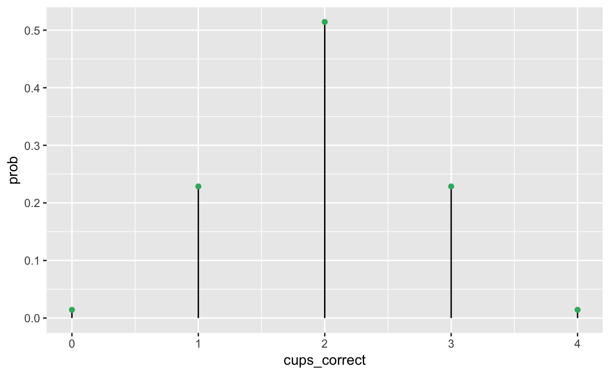
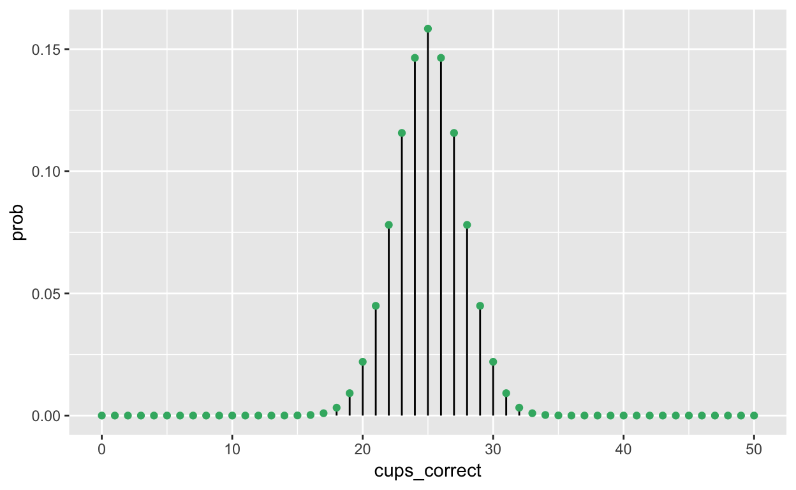

Here’s a simple exercise with an empty code chunk provided for entering the answer.
Generally, there are two types of distributions: continuous and discrete.
| Type | Distributions | In R |
Parameters | Default Values |
|---|---|---|---|---|
| Continuous | Beta (\(\beta\)) | beta |
shape1, shape2 | |
| Cauchy | cauchy |
location, scale | 0, 1 | |
| Chi-square (\(\chi^2\)) | chisq |
degrees of freedom (df) | ||
| Exponential | exp |
1/mean | 1 | |
| F | f |
df1, df2 | ||
| Gamma (\(\gamma\)) | gamma |
shape, 1/scale | NA, 1 | |
| Normal | norm |
mean, standard deviation (sd) | 0, 1 | |
| Student’s t | t |
df | ||
| Uniform | unif |
min, max | 0, 1 | |
| Weibull | weibull |
shape | ||
| Discrete | Binomial | binom |
size, probability | |
| Geometric | geom |
probability | ||
| Hypergeometric | hyper |
m, n, k | ||
| Poisson | pois |
lambda |
For every distribution there are four prefixes. The parameters (in parentheses) for each depend on the core distribution:
R command |
Returns |
|---|---|
d___() |
the height of the probability density function (probability mass function for discrete) |
p___() |
the cumulative density function |
q___() |
the inverse cumulative density function (quantiles) |
r___() |
randomly generated numbers |
To find the probability, p, using traditional statistical methods, you’ll need to first know whether the distribution is discrete or continuous. If discrete, then to find the probability you would use
Write the R code required to add two plus two:
Here’s an exercise with some prepopulated code as well as exercise.lines = 5 to provide a bit more initial room to work.
Now write a function that adds any two numbers and then call it:
add <- function() {
}To find a p-value, you first need to know if the null distribution you are working with is discrete or continuous.
d__(). This provides a point probability- you’ll need to sum to find the probability of a range.p__(). The probability for a single point within a continuous distribution is 0- you can only calculate probability across a range of continuous values. This function takes a quantile (or a vector of quantiles) for the named distribution as input, and returns a probability (between 0 and 1).IQ scores have a distribution that is approximately normal in shape, with a mean of 100 and a standard deviation of 15. What percentage of scores is at or above an IQ of 116? (put a # before the line of code you don’t edit)
1 - pnorm(_, _, _)
# OR
pnorm(_, _, _, lower.tail = FALSE)## [1] 0.1430612Read the “Lady Tasting Tea” excerpt from ModernDive.
From Wikipedia:
“The experiment provided the lady with 8 randomly ordered cups of tea—4 prepared by first adding milk, 4 prepared by first adding the tea. She was to select the 4 cups prepared by one method. This offered the lady the advantage of judging cups by comparison. She was fully informed of the experimental method. The null hypothesis was that the lady had no ability to distinguish the teas. The test statistic was a simple count of the number of successes in selecting the 4 cups (the number of cups of the given type successfully selected).”
Note that she only had to select 4 cups prepared by one method- since she had only 8 cups to choose from, the non-selected 4 cups are assumed to come from the other method. Such an experiment is known to produce a discrete variable with a hypergeometric distribution. This distribution has 4 parameters:
x, q vector of quantiles representing the number of white balls drawn without replacement from an urn which contains both black and white balls.m the number of white balls in the urn. [cups with milk then tea]n the number of black balls in the urn. [cups with tea then milk]k the number of balls drawn from the urn. [number of “draws”]Where m + n is the total number of balls in the urn, or in this case cups of tea. As the story goes, the lady identified all 4 cups correctly (and thus, all 8 cups were correct). What were the chances (exactly!)?
dhyper(_, _, _, _)
# OR
1 - phyper(_, _, _, _)## [1] 0.01428571Find the probability that Muriel could have guessed 0, 1, 2, 3, or 4 cups correctly. Hint: look up ?seq
dhyper(seq(from = _, to = _), _, _, _)## [1] 0.01428571 0.22857143 0.51428571 0.22857143 0.01428571Now save these numbers into a tibble, and make a plot of the probabilities for the hypergeometric distribution on y-axis, across each value of correct cups of tea guessed on the x-axis. Try adding geom_segment to represent the distance between the x-axis and the probability.
library(tibble)
muriel <- tibble(
cups_correct = seq(from = _, to = _),
prob = dhyper(seq(from = _, to = _), _, _, _)
)
Let’s say Fisher devises a new experiment with 100 cups of tea total (50% prepared with tea before milk, 50% prepared with milk before tea), and asks Muriel to guess 50 prepared by one method. Here is the distribution for the resulting variable from this experiment:

We will reject the null hypothesis that Muriel is “average” if her performance falls outside of the 95% confidence interval for \(\mu\). What is the 95% confidence interval?
qhyper(c(_, _), _, _, _) ## [1] 20 30In this fictitious experiment with 100 cups of tea, what is the probability that Muriel will get exactly 31 correct?
## [1] 0.009163535Here’s an exercise where the chunk is pre-evaulated via the exercise.eval option (so the user can see the default output we’d like them to customize). We also add a “hint” to the correct solution via the chunk immediate below labeled print-limit-hint.
Modify the following code to limit the number of rows printed to 5:
mtcarshead(mtcars)You can include any number of single or multiple choice questions as a quiz. Use the question function to define a question and the quiz function for grouping multiple questions together.
Some questions to verify that you understand the purposes of various base and recommended R packages:
Critical Value(s): the value of a given test statistic that corresponds to a rejection point- the point at which you determine to reject the null hypothesis. The critical value defines the boundary of the rejection region for \(H_0\). This value depends on the significance level, \(\alpha\), and whether the test is one-sided or two-sided.
To find critical values, you’ll want to use q(*). This function takes a probability (between 0 and 1) as input, and returns the quantile for the * distribution.
Suppose you want to test the null hypothesis that \(\mu\)=100 with a sample size of n=25 and an \(\alpha\)=.05. What will the critical value(s) for the t statistic be?
qt(c(_, _), _) ## [1] -2.063899 2.063899Suppose you want to test the null hypothesis that \(\mu\leq{100}\) with a sample size n=60 and an \(\alpha\)=.01. What will the critical value(s) for the t statistic be?
qt(_, _) # upper only## [1] 2.391229You conduct a one-sample t test with N=101 and report a p-value of .0245. What is the t-statistic value?
qt(_, _)## [1] -1.992876What are the critical values of t for N=8; \(\alpha\)=.05 using a directional hypothesis in the upper tail (assume testing of means)?
qt(_, _)## [1] 1.894579What are the critical values of t for N=15; \(\alpha\)=.01 using a directional hypothesis in the upper tail (assume testing of means)?
qt(_, _)## [1] 2.624494What are the critical values of t for N=51; \(\alpha\)=.025 using a directional hypothesis in the upper tail (assume testing of means)?
qt(_, _)## [1] 2.008559What are the critical values of t for N=12; \(\alpha\)=.05 using a directional hypothesis in the upper tail (assume testing of means)?
qt(c(_, _), _)## [1] -2.200985 2.200985What are the critical values of t for N=20; \(\alpha\)=.01 using a directional hypothesis in the upper tail (assume testing of means)?
qt(c(_, _), _)## [1] -2.860935 2.860935What are the critical values of t for N=2; \(\alpha\)=.05 using a directional hypothesis in the upper tail (assume testing of means)?
qt(c(_, _), _)## [1] -12.7062 12.7062Given the following sample statistics (\(\bar{x}\)=13.0, sd=1.6, N=21), what is the 95% confidence interval for \(\mu\)?
xbar <- 13
sd <- 1.6
N <- 21## [1] 12.27169 13.72831Suppose that the readings of a laboratory scale are normally distributed with unknown mean \(\mu\) and standard deviation \(\sigma\) = 0.01 grams. To assess the accuracy of the laboratory scale, a standard weight that is known to weigh exactly 1 gram is repeatedly weighed a total of N = 50 times. Let \(\bar{x}\) = 0.998 be the average of the 50 readings. What is the 95% confidence interval for \(\mu\)?
Hint: since you know \(\sigma\) but not the sample standard deviation, you should use the normal distribution, not the t-distribution.
xbar <- 0.998
sigma <- 0.01
N <- 50